ALU
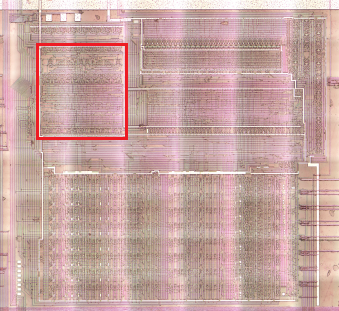
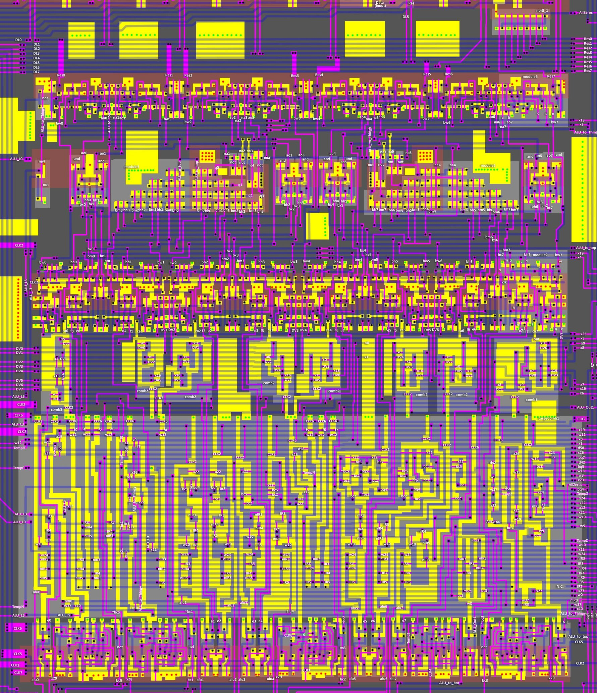
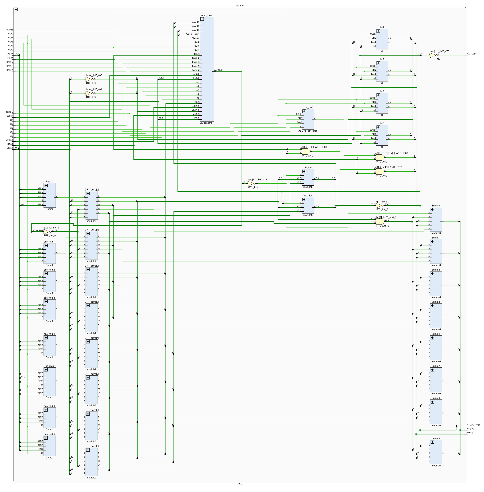
The SM83 ALU is a regular 8-bit CLA adder.
See: https://www.youtube.com/watch?v=WItAXzrfPrE&list=PLBDB2c4Mp7hBLRcEpE19yyHB-zKzsyp_4&index=20
A note from the future: although in this section individual modules are referred to by a single name (e.g. Sums), most modules actually fulfill a hybrid role. For example, the module for obtaining G/P terms is also used for logical operations (as it comes naturally from the nature of G/P). The ALU is not yet fully understood, so some of the signals have "cryptologic" names.
ALU Inputs
| Signal | From | Description |
|---|---|---|
| CLK2 / ADR_CLK_P | External | |
| CLK4 / DATA_CLK_N | External | Used as LoadEnable for ALU_to_bot latch |
| CLK5 / INC_CLK_N | External | |
| CLK6 / INC_CLK_P | External | |
| CLK7 / LATCH_CLK | External | |
| DV[7:0] | Bottom | ALU Operand 2 |
| AllZeros | NOR-8 | 1: The result (Res) is 0. |
| d42 | Decoder1 | Gekkio: s1_cb_00_to_3f, i.e. all operations related to bit permutation (shift/rotate/swap) |
| d58 | Decoder1 | Gekkio: s1_op_pop_sx10 |
| w (many, see below) | Decoder2 | Decoder2 outputs |
| x (many, see below) | Decoder3 | Decoder3 outputs |
| alu[7:0] | Bottom | ALU Operand 1 |
| bq4 | Bottom Left | |
| bq5 | Bottom Left | |
| bq7 | Bottom Left | |
| TempC | Bottom | Flag C from temp Z register (zbus[4]) |
| TempH | Bottom | Flag H from temp Z register (zbus[5]) |
| TempN | Bottom | Flag N from temp Z register (zbus[6]) |
| TempZ | Bottom | Flag Z from temp Z register (zbus[7]) |
| IR[7:0] | IR | Current opcode |
| nIR[5:0] | MightySix | Current opcode (complement) |
Inputs from Decoder2/3
The control ALU inputs from decoders 2/3 are listed separately.
| Decoder2/3 | Where To | Gekkio name |
|---|---|---|
| w0 | Random Logic | s2_cc_check |
| w3 | Random Logic | s2_op_alu8 |
| w9 | Random Logic | s2_op_sp_e_sx10 |
| w10 | Random Logic | s2_alu_res |
| w12 | Random Logic | s2_cb_bit |
| w15 | Random Logic | s2_op_add_hl_sxx0 |
| w19 | Random Logic | s2_data_fetch_cycle |
| w24 | Random Logic | s2_alu_set |
| w37 | Random Logic | s2_op_incdec8 |
| x0 | Shifter, Random Logic | s3_alu_rotate_shift_left |
| x1 | Shifter, Random Logic | s3_alu_rotate_shift_right |
| x3 | Sums | s3_alu_sum |
| x4 | G/P Terms | s3_alu_logic_or |
| x5 | Shifter | s3_alu_rlc |
| x6 | Shifter | s3_alu_rl |
| x7 | Shifter | s3_alu_rrc |
| x8 | Shifter | s3_alu_rr |
| x9 | Shifter | s3_alu_sra |
| x10 | Random Logic | s3_alu_sum_pos_hf_cf |
| x11 | Random Logic | s3_alu_sum_neg_cf |
| x12 | Random Logic | s3_alu_sum_neg_hf_nf |
| x16 | Shifter | s3_alu_swap |
| x18 | Sums | s3_alu_xor |
| x19 | G/P Terms, Random Logic | s3_alu_logic_and |
| x21 | Random Logic | s3_alu_ccf_scf |
| x22 | Random Logic | s3_alu_daa |
| x23 | Random Logic | s3_alu_add_adc |
| x24 | Random Logic | s3_alu_sub_sbc |
| x25 | G/P Terms | s3_alu_b_complement |
| x26 | Random Logic | s3_alu_cpl |
| x27 | Random Logic | s3_alu_cp |
| x28 | Random Logic | s3_wren_cf |
| x29 | Random Logic | s3_wren_hf_nf_zf |
ALU Outputs
| Signal | To | Description |
|---|---|---|
| Res[7:0] | Bottom | ALU Result |
| bc1 | Bottom Left | |
| bc2 | Bottom Left | |
| bc3 | Bottom Left | |
| bc5 | Bottom Left | |
| ALU_to_bot | Bottom | zbus msb (zbus[7]) derived from ALU_to_bot latch |
| ALU_to_Thingy | Thingy | CarryOut |
| ALU_Out1 | Sequencer | 1: Skip branch |
Internal Wires
| Signal | Description |
|---|---|
| e[7:0] | Operand1 processing results for SET/RES/DAA opcodes; module2 e in |
| f[7:0] | module2 f out; Optionaly complemented Operand2 |
| ca[7:0] | Shifter (comb1-3) out (⚠️ active-low) |
| bx[7:0] | module2 x out |
| bm[7:0] | module2 m out (G-terms) |
| bh[7:0] | module2 h out (P-terms) |
| w[7:0] | module2 w out; The result of the logical operation AND/OR/permutation of Operand2 bits. "logic_op" |
| ao[7:0] | G/P ands outputs to module6 (logic xor) |
| na[7:1] | CLA Carry outputs; CLA nots outputs to module6 |
| q[7:0] | CLA carry complement outputs (bits 0-3: topologicaly left, bits 4-7: topologicaly right) |
| nbc[5:0] | #bc |
| azo[13:0] | Random logic results |
| ALU_to_top | Carry In |
| ALU_L0 | ~Carry7 |
| ALU_L3 | ~Carry4 |
| ALU_L5 | Carry4 |
NOR-8
8-NOR:
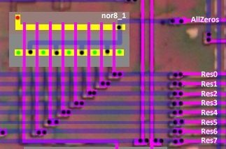
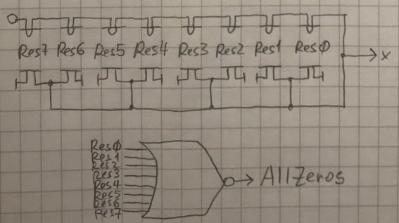
The result of the nor8 operation is the AllZeros signal. This is often required to calculate the Z flag.
Top Part
The paired construction that looks like a Christmas tree is actually two 4-bit Carry Lookahead Generators (module5).
In between is the small logic (8 AND gates implementing logical XOR operation out of G/P terms), and above the 8 "Sum" blocks (module6), which give the result of the ALU (Res).
module5 (4-bit CLA Generators, x2)
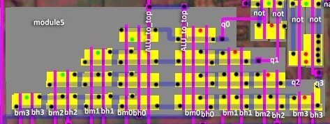
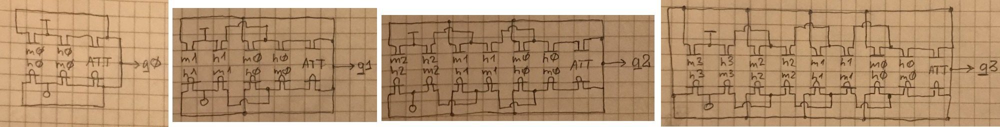
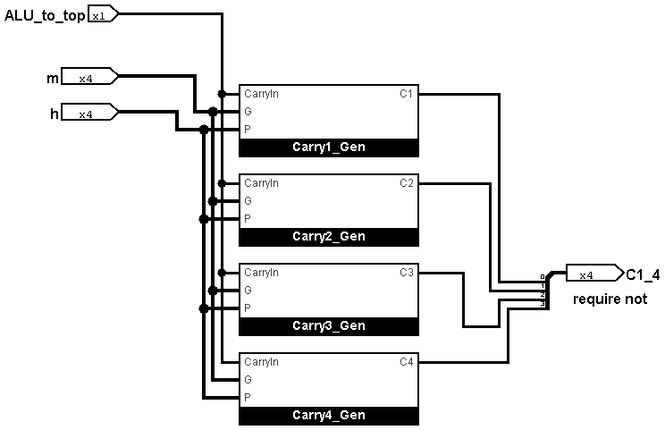
The gaps contain AND gates that implement a logical XOR operation based on the G/P Terms outputs (x/h).
module6 (Sums)
8 identical modules.
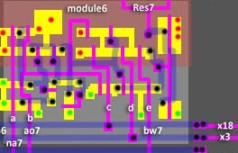
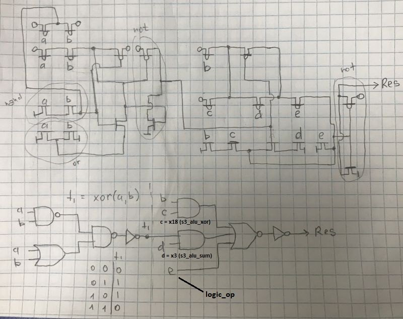
| Port | Dir | Description |
|---|---|---|
| a | input | |
| b | input | |
| c | input | x18 (s3_alu_xor) |
| d | input | x3 (s3_alu_sum) |
| e | input | The result of the logical operation AND/OR/permutation of Operand2 bits. |
| x | output | Res |
Middle Part (G/P Terms)
8 identical modules.
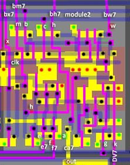
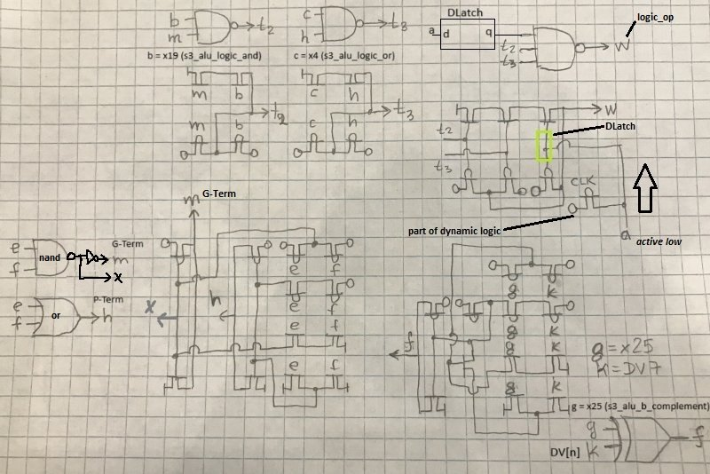
| Port | Dir | Description |
|---|---|---|
| a | input | Shifter (comb1-3) outputs (ca[7:0]); Stored on input transparent DLatch. |
| b | input | x19 (s3_alu_logic_and) |
| c | input | x4 (s3_alu_logic_or) |
| e | input | Large Comb results; Result of executing SET/RES opcodes for operand1 |
| f | output | To Large Comb NAND trees; Operand2 optionally complemented |
| g | input | x25 (s3_alu_b_complement) |
| h | output | To CLA Generator (P-terms) |
| k | input | Operand2: DV[n] |
| m | output | To CLA Generator (G-terms) |
| clk | input | CLK2 |
| x | output | To ands near CLA (G-terms complement) |
| w | output | To Sums (module6); The result of the logical operation AND/OR/permutation of Operand2 bits. |
Bottom Part
Contains shifter, random logic and the flag register (F).
Shifter
Contains 8 dynamic comb logic modules (ANDs-to-NORs + CLK2), multiplexing DV operand(2) to outputs (ca[7:0], active low output):
| Comb1 (bit 7) | Comb2 (bits 6-1) | Comb3 (bit 0) |
|---|---|---|
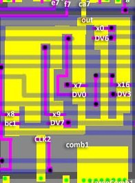 |
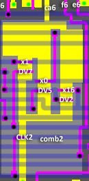 |
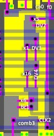 |
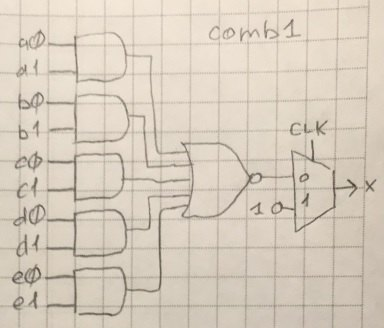 |
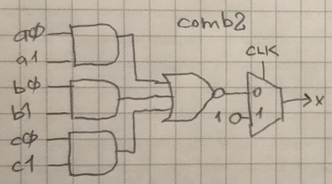 |
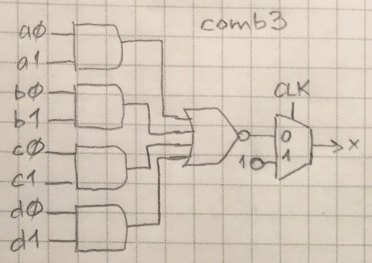 |
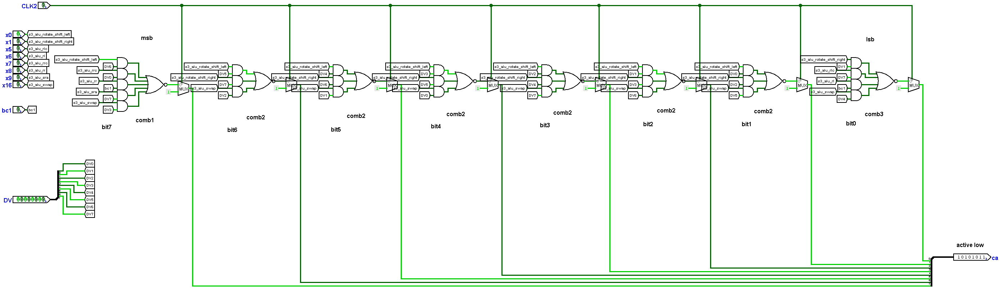
The output from the dynamic combinatorial logic is stored on the DLatch (see G/P Terms module).
Random Logic
The lower part contains many dynamic NAND trees, the inputs for which come from all sides and also from module2 instancies.
Tree numbering is topological (how they are arranged on the chip). ALU trees 0,3-6,8,9 are responsible for preprocessing operand 1 for SET/RES opcodes (CB table) as well as DAA (decimal correction). Because of the topological numbering of the trees, they don't go in order, which is a bit ugly.
Random logic (14 NAND trees):
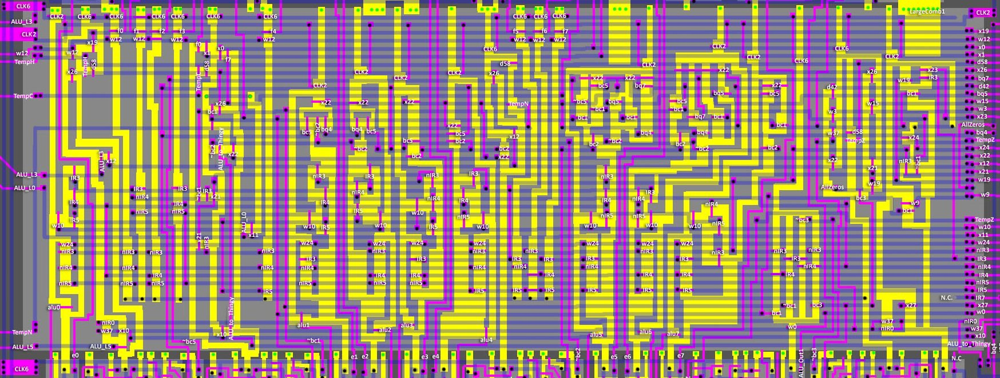
| Tree | CLK | Issued as | Tree |
|---|---|---|---|
| alu_0 | CLK2 | e0 | alu0 | (w24&nIR3&nIR4&nIR5) | (w10&(IR3|IR4|IR5)) |
| alu_1 | CLK6 | bc5 | (ALU_L5&((nIR0&w37)|x10)) | (ALU_L3&x12) | x26 | w12 | x19 | (TempH&d58) |
| alu_2 | CLK6 | bc1 | (f0&x1) | (TempC&d58) | (~bc1&IR3&x21) | (x21&nIR3) | (x10&ALU_to_Thingy) | (x22&(bc1|(~bc2&ALU_to_Thingy))) | (bc1&x26) | (f7&x0) | (ALU_L0&x11) |
| alu_3 | CLK2 | e1 | alu1 | (w24&IR3&nIR4&nIR5) | (w10&(nIR3|IR4|IR5)) | (x22&(bc5|(~bc2&bq4))) |
| alu_4 | CLK2 | e2 | alu2 | (w24&nIR3&IR4&nIR5) | (w10&(IR3|nIR4|IR5)) | (x22&~bc2&(bq4|bc5)) |
| alu_5 | CLK2 | e3 | alu3 | (w24&IR3&IR4&nIR5) | (w10&(nIR3|nIR4|IR5)) | (x22&bc2&bc5) |
| alu_6 | CLK2 | e4 | alu4 | (w24&nIR3&nIR4&IR5) | (w10&(IR3|IR4|nIR5)) | (x22&bc2&bc5) |
| alu_7 | CLK6 | bc2 | (bc2&x22) | x12 | x26 | (TempN&d58) |
| alu_8 | CLK2 | e5 | alu5 | (w24&IR3&nIR4&IR5) | (w10&(nIR3|IR4|nIR5)) | (bc2&x22&((bc1&~bc5)|(~bc1&bc5))) | (~bc2&x22&((bq5)|(bc1)|(bq4&bq7))) |
| alu_9 | CLK2 | e6 | alu6 | (w24&nIR3&IR4&IR5) | (w10&(IR3|nIR4|nIR5)) | (bc2&x22&(~bc1&bc5)) | (~bc2&x22&((bq4&bq7)|(bc1)|(bq5))) |
| alu_10 | CLK2 | e7 | alu7 | (w24&IR3&IR4&IR5) | (w10&(nIR3|nIR4|nIR5)) | (bc2&x22&(bc1|bc5)) |
| alu_11 | CLK6 | ALU_Out1 | w0 & ((nIR3&IR4&bc1) | (IR3&IR4&~bc1) | (IR3&nIR4&~bc3) | (nIR3&nIR4&bc3)) |
| alu_12 | CLK6 | bc3 | (f0&w12&nIR3&nIR4&nIR5) | (f1&w12&IR3&nIR4&nIR5) | (f2&w12&nIR3&IR4&nIR5) | (f3&w12&IR3&IR4&nIR5) | (f4&w12&nIR3&nIR4&IR5) | (f5&w12&IR3&nIR4&IR5) | (f6&w12&nIR3&IR4&IR5) | (f7&w12&IR3&IR4&IR5) | (AllZeros&(d42|w3|w37|x22)) | (d58&TempZ) | (bc3&(x26|w15|x21|w19)) |
| alu_13 | CLK2 | ALU_to_top ("Carry In") | x27 | (w37&nIR0) | (w9&bc1) | (x24&(nIR3|~bc1)) | (w19&bc1) | (x23&IR3&bc1) |
The result is an AND-to-NOR tree (using alu_0 as an example):
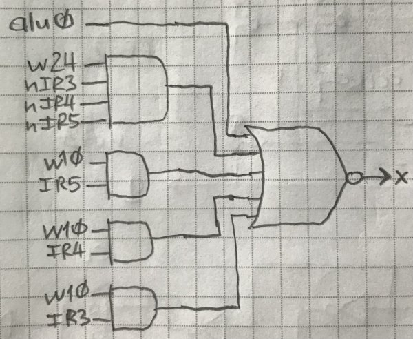
(the dynamic part is not shown in the picture)
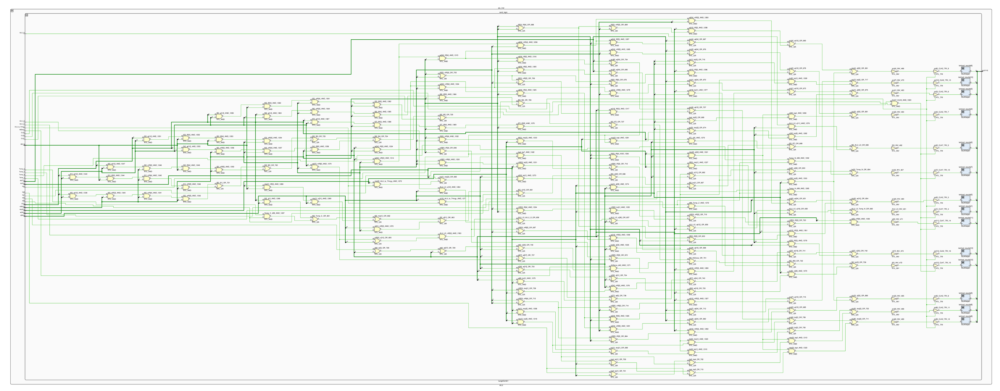
ALU Operand1 Preprocessing (trees 0,3-6,8-10)
ALU trees 0,3-6,8-10 are responsible for preprocessing operand 1 for SET/RES opcodes (CB table) as well as DAA (decimal correction). Because of the topological numbering of the trees, they don't go in order, which is a bit ugly.
Cond Code Check (tree 11)
ALU tree 11 deals with code checking for conditional instructions (NZ/Z/NC/C)
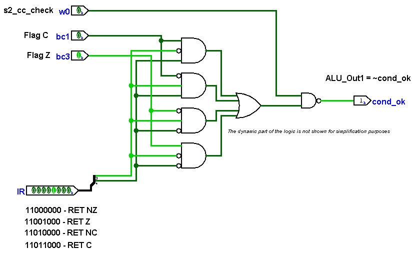
Flags Logic (trees 1,2,7,12)
TBD.
Carry In (tree 13)
TBD.
Flags
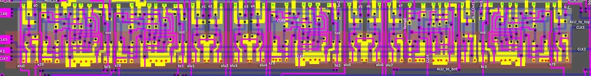
bc
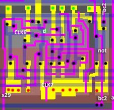
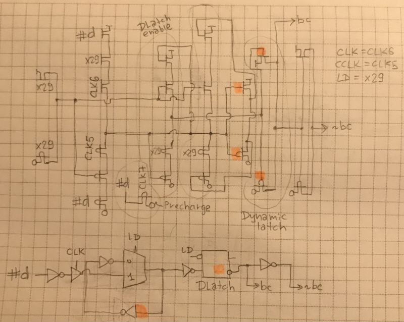
Regular memory cell (latch) with write enable (x28/x29). It also contains a Precharge FET for the dynamic logic which is above (input d). By the way the input d in the drawing is marked in inverse polarity, because the current hypothesis is that the signal bc is in direct polarity, and the operation which forms the signal d (AOI) gives the result in inverse polarity.
ALU_to_bot
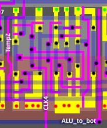
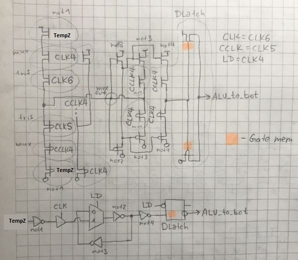
A regular memory cell (latch), for storing the TempZ = zbus[7] value (msb). The signal CLK4 acts as WriteEnable.